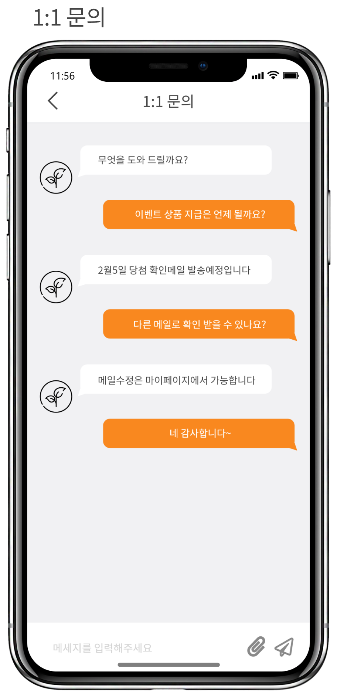

Main
쉽고 즐거운 비건의 시작 비건이지ABOUT
비건은 시작하기 어렵다 다양한 정보를 쉽고 빠르게 얻고싶다 요즘 떠오르고 있는 키워드 중 하나 인 "비건"비건은 동물,환경 뿐만 아니라 개개인의 건강을 위해 찾는 사람이
많아지고 있는 상황입니다. 각각의 다양한 니즈에 맞는 궁금증들을 해결하기 위해 비건이지는 다양하고 복잡한 정보를 직관적이고 깔끔한 디자인으로 볼 수 있으며 북마크 기능을
통해 나만의 레시피, 식당등을 정리 할 수 있습니다. 또한 댓글, 리뷰 기능을 통해
다른 유저들과 소통하며 쉽게 비건을 시작 할 수 있습니다.
BRANDING
LOGO FONT COLOR ICONDETAILS
01 Splash & loginMain Screen
02 직관적이고 깔끔한 카테고리로 복잡함을 줄이고오늘의 레시피, 식당, 카페베이커리를 추천해드립니다.
Recipe & Filter
03 레시피 페이지에서는 원하는 종류의 음식을선택할 수 있고 필터를 이용해 더 자세한 내용을
검색 할 수 있습니다.
restaurant & Cafe
04 식당, 카페•베이커리 페이지에서는 검색을 통해원하는 장소와 주변에 있는 식당을 검색할 수 있고
식당에 대한 다양한 정보를 얻을 수 있습니다.
Review & Comment
05 로그인을 통해 다른 유저들과 소통 할 수 있습니다!내가 다녀온 식당의 리뷰를 남길 수 있고 레시피에 대한 의견
또 리뷰에 대한 공감 댓글 등 커뮤니티 공간을 활용해보세요!
My Page
06 마이페이지 에서는 북마크 했던 레시피, 식당, 도움되었던리뷰등 다양한 내용들을 한번에 확인할 수 있으며
내가 작성했던 리뷰, 댓글을 확인 할 수있습니다.

Notice & Chat
07 공지사항에서 다양한 이벤트와 안내사항을확인할 수 있으며 1:1문의 채팅을 통해 문의를
남길 수 있습니다. 
footer
THANK YOU FOR WATCHING COPYRIGHT 2022 by veganeasy All Rights Reserved.